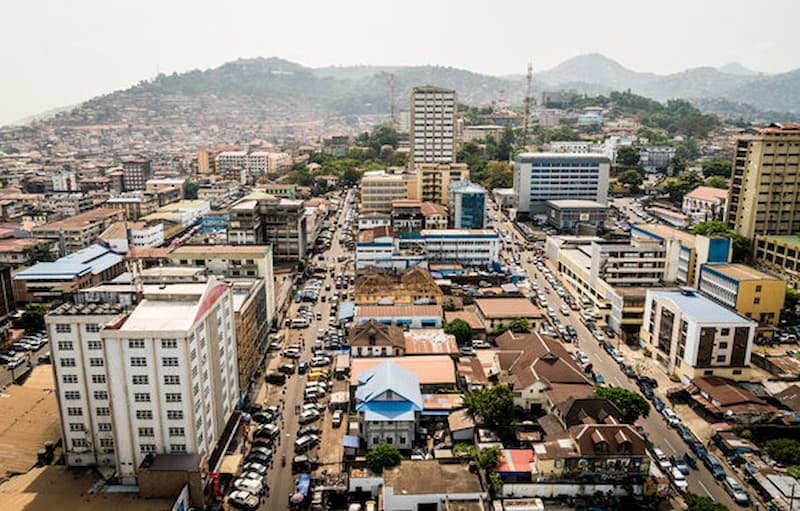

Freetown is the vibrant capital of Sierra Leone, nestled on the Atlantic coast and surrounded by lush hills. Known for its rich history—from its founding as a settlement for freed African American, Afro-Caribbean, and Liberated African slaves in 1792—Freetown today is a cultural melting pot with lively music, friendly communities, and beautiful beaches.
What I love most about Freetown is its unique blend of rugged natural beauty and urban energy—from the winding roads of the hilltop to the bustling markets by the sea. Whether enjoying fresh seafood, strolling through Lumley Beach at sunset, or exploring the historic Cotton Tree, there’s always something compelling in every corner.
